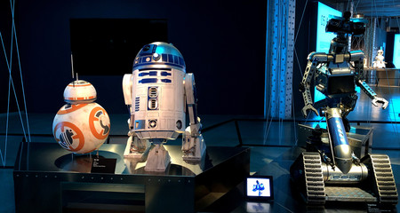

Inteligencia Artificial

La inteligencia artificial, en el contexto de las ciencias de la computación, es el conjunto de sistemas o combinación de algoritmos, cuyo propósito es crear máquinas que imitan la inteligencia humana para realizar tareas y pueden mejorar conforme la información que recopilan.
Cloud Computing

La computación en la nube conocida también como servicios en la nube, informática en la nube, nube de cómputo o simplemente «la nube», es el uso de una red de servidores remotos conectados a internet para almacenar, administrar y procesar datos, servidores, bases de datos, redes y software.
Realidad Aumentada y Metaverso

La realidad aumentada permite evaluar y compartir prototipos sin la necesidad de fabricarlos. La realidad virtual genera espacios virtuales y tridimensionales donde varias personas pueden acceder al mismo y comentar lo que están viendo.
Robótica
La robótica es la ciencia que se ocupa del estudio de la programación y la mecánica de los robots y está relacionada con campos tan variados como la informática, la electrónica, la nanotecnología y la ingeniería.